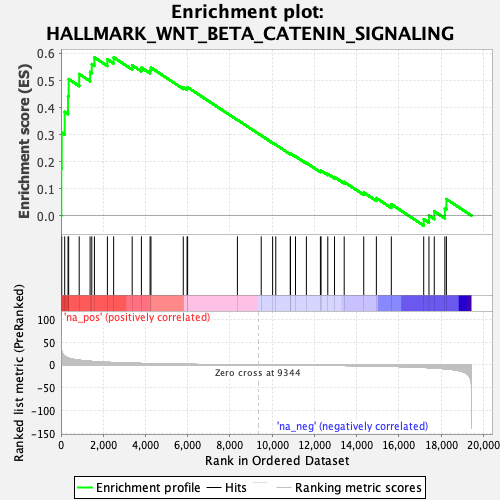
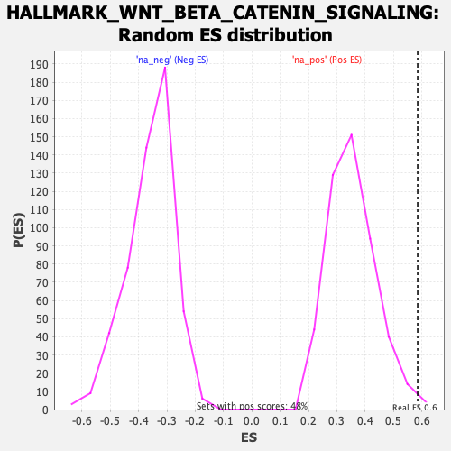

| | | Dataset | DE_genes |
| Phenotype | NoPhenotypeAvailable |
| Upregulated in class | na_pos |
| GeneSet | HALLMARK_WNT_BETA_CATENIN_SIGNALING |
| Enrichment Score (ES) | 0.58543175 |
| Normalized Enrichment Score (NES) | 1.6527472 |
| Nominal p-value | 0.008403362 |
| FDR q-value | 0.0062700356 |
| FWER p-Value | 0.041 |
Table: GSEA Results Summary

Fig 1: Enrichment plot: HALLMARK_WNT_BETA_CATENIN_SIGNALING
Profile of the Running ES Score & Positions of GeneSet Members on the Rank Ordered List
| SYMBOL | RANK IN GENE LIST | RANK METRIC SCORE | RUNNING ES | CORE ENRICHMENT | | 1 | DLL1 | 14 | 40.662 | 0.1765 | Yes |
| 2 | CCND2 | 34 | 30.097 | 0.3068 | Yes |
| 3 | HDAC2 | 175 | 19.345 | 0.3839 | Yes |
| 4 | NOTCH1 | 334 | 15.185 | 0.4419 | Yes |
| 5 | TP53 | 363 | 14.770 | 0.5049 | Yes |
| 6 | LEF1 | 862 | 10.239 | 0.5238 | Yes |
| 7 | MYC | 1378 | 7.849 | 0.5315 | Yes |
| 8 | SKP2 | 1458 | 7.595 | 0.5606 | Yes |
| 9 | CUL1 | 1583 | 7.169 | 0.5854 | Yes |
| 10 | FZD1 | 2197 | 5.650 | 0.5784 | Yes |
| 11 | NKD1 | 2493 | 5.090 | 0.5854 | Yes |
| 12 | CTNNB1 | 3371 | 3.678 | 0.5563 | No |
| 13 | MAML1 | 3807 | 3.165 | 0.5476 | No |
| 14 | GNAI1 | 4218 | 2.674 | 0.5382 | No |
| 15 | TCF7 | 4260 | 2.641 | 0.5476 | No |
| 16 | PPARD | 5790 | 1.355 | 0.4747 | No |
| 17 | AXIN2 | 5971 | 1.254 | 0.4708 | No |
| 18 | HEY2 | 5996 | 1.240 | 0.4750 | No |
| 19 | PSEN2 | 8353 | 0.213 | 0.3545 | No |
| 20 | PTCH1 | 9481 | -0.024 | 0.2965 | No |
| 21 | KAT2A | 10021 | -0.130 | 0.2693 | No |
| 22 | JAG1 | 10170 | -0.169 | 0.2624 | No |
| 23 | WNT5B | 10858 | -0.343 | 0.2285 | No |
| 24 | NCOR2 | 10866 | -0.345 | 0.2296 | No |
| 25 | CSNK1E | 11105 | -0.418 | 0.2192 | No |
| 26 | NCSTN | 11620 | -0.578 | 0.1952 | No |
| 27 | HEY1 | 12284 | -0.799 | 0.1645 | No |
| 28 | DKK1 | 12314 | -0.812 | 0.1666 | No |
| 29 | DVL2 | 12633 | -0.953 | 0.1543 | No |
| 30 | RBPJ | 12952 | -1.081 | 0.1426 | No |
| 31 | NOTCH4 | 13411 | -1.303 | 0.1247 | No |
| 32 | FZD8 | 14336 | -1.914 | 0.0854 | No |
| 33 | AXIN1 | 14934 | -2.394 | 0.0651 | No |
| 34 | JAG2 | 15642 | -3.112 | 0.0422 | No |
| 35 | NUMB | 17176 | -5.436 | -0.0131 | No |
| 36 | HDAC5 | 17425 | -5.994 | 0.0002 | No |
| 37 | FRAT1 | 17676 | -6.625 | 0.0162 | No |
| 38 | ADAM17 | 18177 | -8.379 | 0.0270 | No |
| 39 | HDAC11 | 18251 | -8.710 | 0.0612 | No |
Table: GSEA details [plain text format]

Fig 2: HALLMARK_WNT_BETA_CATENIN_SIGNALING: Random ES distribution
Gene set null distribution of ES for HALLMARK_WNT_BETA_CATENIN_SIGNALING